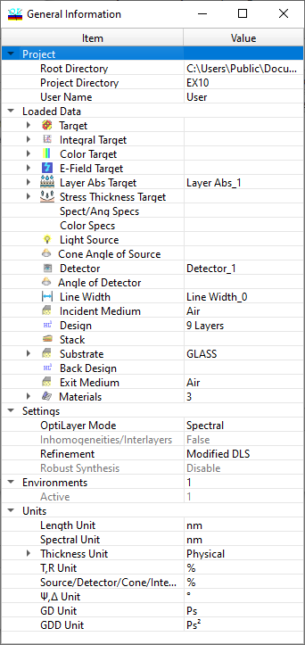
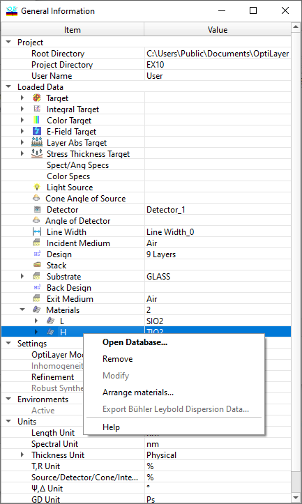

General Information Window
General Information
Navigation: OptiLayer Menu Commands > View Menu >
General Information
` <idh_menu_view.html>`__ ` <idh_menu_view.html>`__ ` <idh_window_list.html>`__
You can check the status of OptiLayer in the General Information window. It displays general information such as the Root Directory, Problem Directory, User Name, and data that have been loaded into memory. This window also shows most of the Configuration menu like units, etc. The OptiLayer mode setting (Angular or Spectral data representation) is also displayed in this window. Once closed, you can reopen this window by selecting “General Information” from the View menu or by pressing Ctrl+I. You can access more detailed information by expanding nodes with [+] buttons, and hide unnecessary details by collapsing nodes with [-] buttons (in the illustration below, the highest level of details is shown).

Many frequently used commands can be accessed using the right-click popup menu. The content of the right-click menu depends on the current selection in the General Information Window. In the example below, Layer Material operations are presented:

Many operations can be completed directly in the General Information window with the help of editors positioned in the Value column. For example, loaded items can be changed with the help of drop-down lists. Some values can be directly edited, such as substrate thickness.